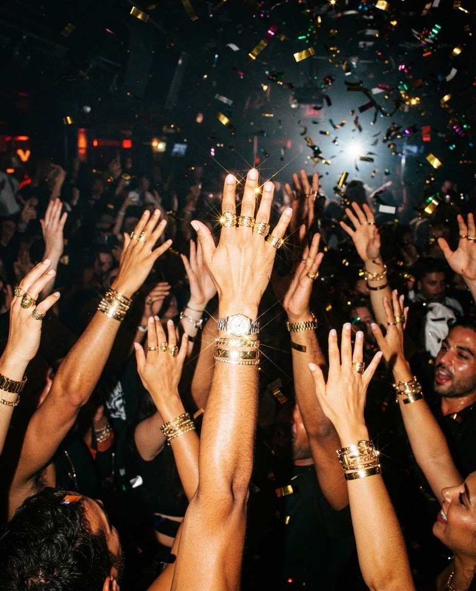
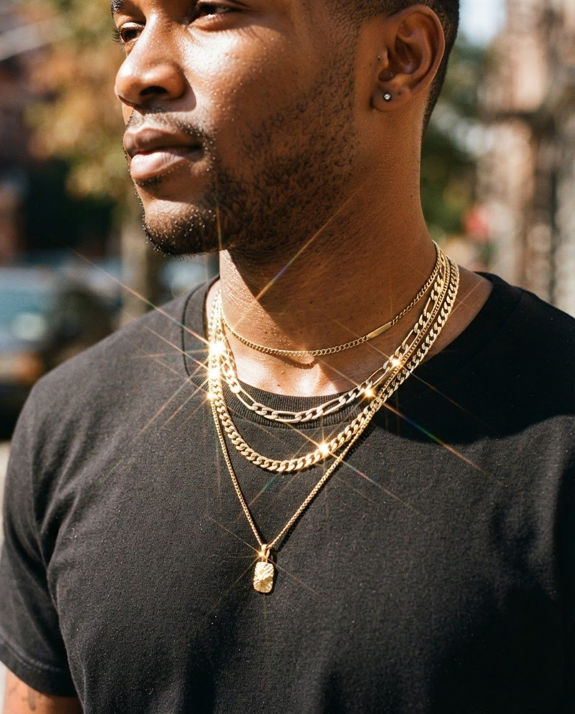
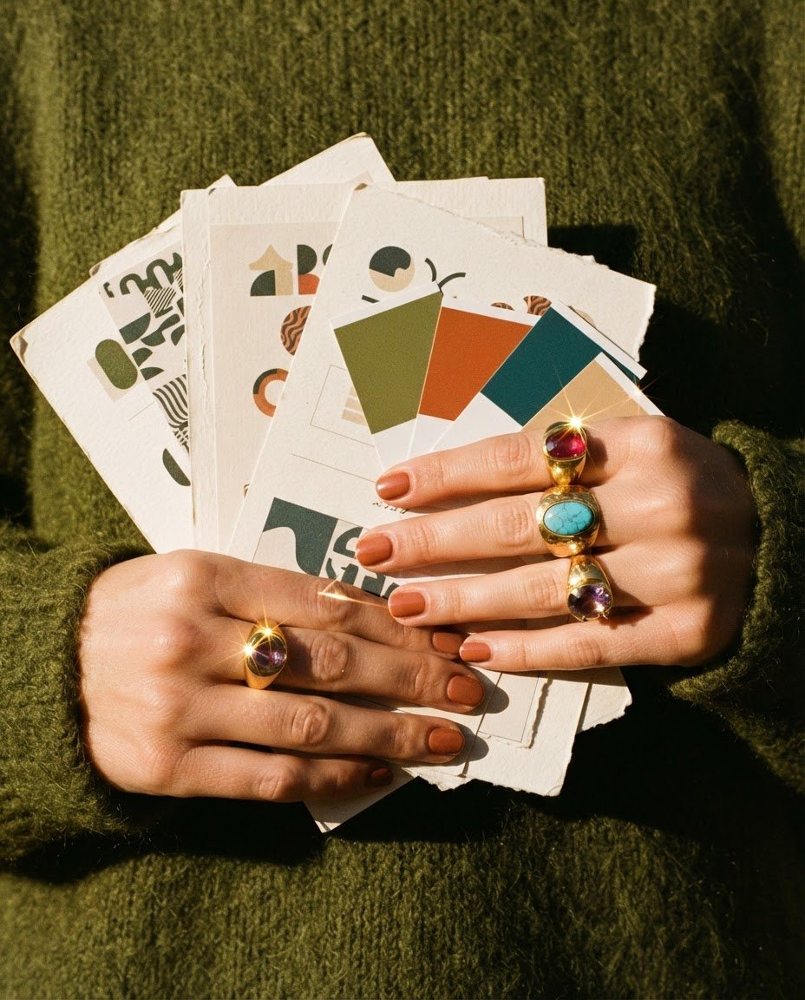

EIRO
Eiro, estudio creativo de marca, contenido, marketing, redes y eventos.
Eiro es un estudio creativo de marca, contenido, gestión de marketing y redes, y eventos. Cuidamos la relación con cada cliente tanto como el trabajo.

Trabajos
Selección · imágenes de muestra
-
Muestra -
Muestra -

Muestra -

Muestra
Todo en un mismo lugar. Para que nada se contradiga.
Eiro, estudio creativo

Estudio
Cerca de cada cliente.
Lo que nos distingue es la relación con cada cliente: cercana, directa y pensada para durar más que un proyecto.
Pensamos la marca, el contenido, el marketing y los eventos en un mismo lugar, para que las piezas no se contradigan entre sí. El nombre sale de Gaiteiro, el apellido de su fundador.
Matías GaiteiroFundador y director creativo
Qué hacemos
Cuatro áreas, juntas o por separado
Marca
Definimos quién es tu marca y cómo se ve, y dejamos las reglas para que se use bien en todos lados.
- Estrategia y posicionamiento
- Identidad visual
- Sistemas gráficos
- Manual de marca
Contenido
Pensamos y producimos las piezas que tu marca publica, con una idea y una estética en común.
- Dirección de arte
- Fotografía
- Video
- Diseño de piezas
Marketing y redes
Nos hacemos cargo del día a día: planificamos, publicamos, coordinamos al equipo y revisamos cómo funciona.
- Planificación
- Gestión de cuentas
- Calendarios de contenido
- Campañas y anuncios
- Coordinación de equipos
- Seguimiento
Eventos
Diseñamos la identidad y la comunicación de un evento, desde el concepto hasta las piezas de difusión.
- Concepto e identidad
- Piezas de difusión
- Contenido audiovisual
- Material gráfico
Cómo trabajamos
Primero entender, después diseñar
Entender
Qué ofrecés, a quién y qué lugar ocupás hoy. De ahí sale el problema que hay que resolver.
Definir
Posicionamiento, tono y prioridades. Son las decisiones que guían todo lo que viene después.
Crear
La identidad, los contenidos, la campaña o el evento. Cada pieza responde a algo que ya se decidió.
Acompañar
Seguimos cerca mientras la marca se usa y ajustamos lo necesario para que se mantenga consistente.
Tres formas de empezar
- Proyecto puntual
- Algo concreto, con principio y fin: una identidad, un evento o un lanzamiento.
- Acompañamiento mensual
- Trabajo continuo en redes, contenido y marketing, con un plan que se revisa cada mes.
- Consultoría estratégica
- Encuentros para ordenar ideas antes de invertir, o para sumar una mirada externa a tu equipo.
Decinos hola
Contanos lo que tengas: una idea, un problema o un proyecto en marcha. Te respondemos para ver por dónde conviene empezar.
Estamos terminando de configurar nuestros canales de contacto. Muy pronto vas a poder escribirnos desde acá.